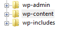
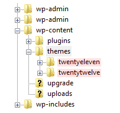
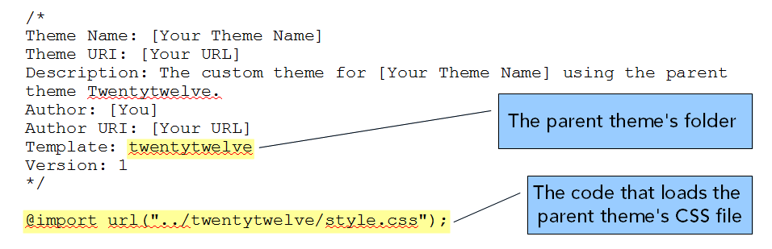
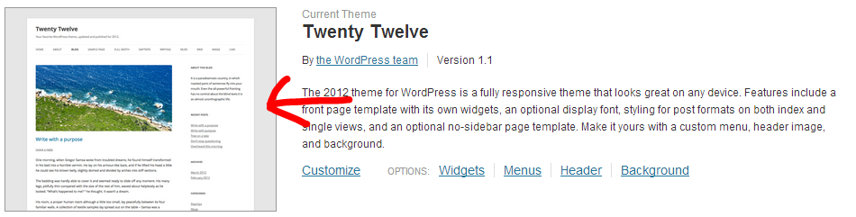
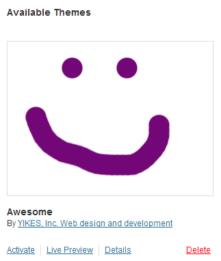
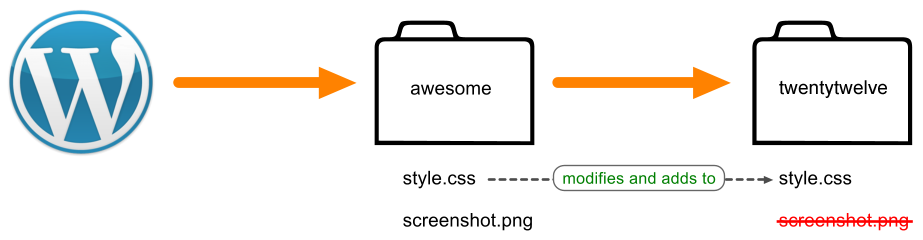
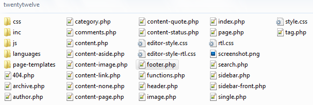
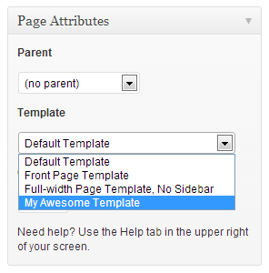
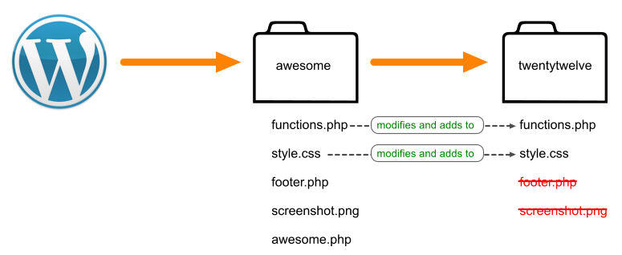

Day 2
Today you will...
- Learn about Themes and how to find, install, preview and activate them
- Learn about Plugins and how to find, install and activate them
- Take a 15 minute break
- Break into groups and either learn how to make child themes or learn about theme frameworks
- Get back together for resources, questions and wrap-up
But First
A review...
- What is the difference between WordPress.org and WordPress.com?
- What username should you never EVER use for a WordPress user account?
- What is the difference between a Page and a Post?
What are Themes?
Official description from WordPress.org
Fundamentally, the WordPress Theme system is a way to 'skin' your weblog. Yet, it is more than just a 'skin.' Skinning your site implies that only the design is changed. WordPress Themes can provide much more control over the look and presentation of the material on your website.
Themes are
Powerful
A theme not only determines how a site looks, it can also determine its functionality. There are themes that can turn a site into an ecommerce store, an art portfolio, project management system, CRM, bug tracking system and more.
Managing Themes
Appearance > Themes
WordPress currently comes with 2 themes: Twenty Twelve and Twenty Eleven (get a sneak peak of Twenty Thirteen).
Under Appearance > Themes you can see they are both installed. The theme in use is labeled "Current" and the other "Available."
Themes
Appearance > Themes
Live preview a theme before you activate or customize!
A fabulous new feature, introduced in WordPress 3.5, is the live theme previewer. Click "Customize" under the current theme or "Live Preview" under an available theme to see how a new or modified theme will look before you commit to it.
Themes
Finding new themes
Themes
Installing themes
- Install right from the "Install Themes" tab
- Download a theme zip file and install it via the "upload" link
- Unzip the theme files and upload it via FTP to the
/wp-content/themes folder
Exercise time!
Some tasks to get you familiar with installing, previewing and activating themes
- Use the live theme previewer to see how Twenty Eleven will look on your site and try activating it
- Search for themes via the "Install Themes" tab and give one a try
- Browse the WordPress Themes Directory, download one and install it using the "upload" link
What are Plugins?
Official description from WordPress.org
Plugins can extend WordPress to do almost anything you can imagine.
Plugins are
Powerful
Plugins are used to add all kinds of functionality to WordPress -- ecommerce, SEO, forms, photo galleries, sliders, spam protection, social media sharing, forums...the list is almost endless!
Plugins
Plugins menu
WordPress comes with 2 plugins:
- Akismet: protect your blog from comment and trackback spam. This plugin requires an Akismet key
- Hello Dolly: Adds a random lyric from "Hello Dolly" to the upper right-hand corner of admin screen.
Plugins
Installing and activating plugins
- Install right from "Install Plugins" search results
- Download a plugin zip file and install it via the "upload" link
- Unzip the plugin files and upload it via FTP to the
/wp-content/plugins folder
Plugins
Usage tip
Plugins often use shortcodes to insert content into a page or post.
For example, the plugin Contact Form 7 uses the shortcode [contact-form-7 id="105"] (the ID is the ID of the form) to allow you insert a form you built into a page.
Plugins
Security tip
Unlike themes, which go through a rigid approval process before inclusion in the Themes Directory, plugins do not go through as strict a process. Make sure a plugin is up-to-date and has good ratings.
Top Free Plugins
Free plugins I couldn't live without
Top Premium Plugins
For-pay plugins I couldn't live without
Exercise time!
Some tasks to get you familiar with installing and activating plugins
- Search for plugins via Plugins > Add New and try some
- Browse the WordPress Plugins Directory, download one and install it using the "upload" link
Customizing WordPress
Using your own code or a theme framework
Break into groups!
Beyond the Admin
Digging into code
Now it's time to make code-level changes to modify our WordPress site.
First let's look at how WordPress files are organized.
Beyond the Admin
WordPress file and folder structure

- wp-admin - Back-end core files, never touch these!
- wp-content - Theme, plugin and uploaded files
- wp-includes - Front-end core files, never touch these either!
Beyond the Admin
Where theme files live

- wp-content
- plugins
- themes
- twentyeleven «
- twentytwelve «
#1 Rule of WordPress Development
Never EVER touch WordPress core code. EVER!
This means do not edit:
- WordPress core files
- Plugin files
- Theme files
Why?
- Stuff gets broken
- Other plugins and themes may not work with your hacks
- Updates wipe out your changes
So how do you customize a WordPress theme?
You create your own theme that is a "child" of another theme
- Your child theme overrides the design elements you want changed and otherwise falls back to the parent.
- Your child theme can also modify or add functionality to the parent theme.
How it Works
Your child theme's folder is a safe land where you can add css and php files without causing any permanent damage.
If you break something you can just hit undo or remove your file. All parent theme files will remain intact.
What Your Theme Needs
In order for your child theme to work it needs 2 things
Really, it only needs 1 thing, but 2 is cooler
What Your Theme Needs
Thing #1 - a style.css file
It tells WordPress to load the parent theme after your theme.
/*
Theme Name: [Your Theme Name]
Theme URI: [Your URL]
Description: The custom theme for [Your Theme Name] using the parent theme Twenty Twelve.
Author: [You]
Author URI: [Your URL]
Template: twentytwelve
Version: 1
*/
@import url("../twentytwelve/style.css");
What Your Theme Needs
Thing #1 - a style.css file

What Your Theme Needs
Thing #2 - a screenshot
This is the thumbnail image that shows up under Appearance > Themes in the WordPress admin.

What Your Theme Needs
Thing #2 - a screenshot
You can find the 600px by 400px screenshot image file, screenshot.png, in
/wp-content/themes/twentytwelve
Open the file in your favorite bitmap editor, turn it into your own screenshot and save it into your child theme's folder.
Upload and Activate
Upload your 2 files to your theme folder.

After you upload your files to your theme folder go check out Appearance > Themes in the WP admin.
Your child theme is now listed under "Available Themes." Hit activate and now your theme will be in charge.
Where We're At Now

The 2 files in your theme illustrate how a child theme's files effect the parent's files -- they either modify and add functionality to its identically named file, or completely overwrites it.
Making CSS Changes
Your style.css file will override styles in the parent theme's style.css file as long as you use the same selectors.
Editing Template Files
If you look in the twentytwelve folder you can see all the template files that make up the theme. The template files control how your site looks and displays information. You can create your own versions of these files in your child theme.

How Do I Know What File to Edit?
The template file names are pretty logical, but you can use these handy cheat sheets:
Quick overview of some template files
- header.php - The global header for your site
- footer.php - The global footer for your site
- index.php - The posts (blog) page
- page.php - Static pages
- sidebar.php - Your sidebar widget areas
- single.php - A single post
Gettin' fancy with template tags
Template tags let you insert dynamic content into your templates.
Include/function tags
Used to grab and display information or execute other template files
<?php echo home_url(); ?>
<?php bloginfo(); ?>
<?php wp_list_pages(); ?>
Check out the WordPress Codex Function Reference
Conditional tags
Used to grab and display content depending on what page it is and the conditions it matches.
is_home()
is_single()
is_page()
is_category()
Check out the WordPress Codex Conditional Tags Page
Making your own templates
Twentytwelve gives you 3 templates to choose from:

- Default
- Front Page
- Full-width, No Sidebar
You can make as many additional templates as you like.
Templates you create will appear in the Template drop-down menu on the Page edit screen.
What your template file needs
First, a name (this goes at the top of your file)
<?php
/*
Template Name: [Type your template name here]
*/
?>
Second, at least these 2 include tags
<?php get_header(); ?>
<?php get_footer(); ?>
What your template file needs
Last, any layout modifications, tags and content you want to add
Modifying functionality
functions.php acts like a plugin to control functionality in your theme. You can use it modify and add functionality to the parent theme.
- Add custom post types
- Customize the <!--more--> link
- Customize the admin
- Change the excerpt length
- Enable shortcodes in text widgets
- Add custom thumbnail sizes
- And much much more...really anything you can program
Modifying functionality
functions.php uses hooks, actions and filters to make your theme fancy.
- Hooks - provided by WordPress to allow your plugin to 'hook into' the rest of WordPress
- Actions - allows you to replace specific data found within an existing Action.
- Filters - allows you to add or remove code from existing Actions
Visit the WordPress Codex Functions File Explained page and the WordPress Hooks Databasefor more info.
Where We're At Now

Now our child theme is modifying files, overwriting files and adding files to our parent theme.
Build Your Own Themes
With starter themes
Starter themes are themes that are meant to be forked and made into your own unique theme.
Some great starter themes
- _s (underscores) - A great, minimal starter theme created by the folks at Automatic
- Bones - A mobile-first theme Built around the HTML5 Boilerplate. It also uses LESS or Sass if you're into that.
- Roots - A starter theme based on HTML5 Boilerplate & Twitter Bootstrap
- HTML5 Reset - A stable, cross-browser-compatible, style-free theme designed to help get your custom WordPress project off the ground.
Build a Unique Site
A theme framework can allow you to make a unique site without using code (but you can if you want)
Where to go from here
Power Users
Where to go from here
Designers/Developers
THE END of Day 2
Questions and 1-on-1 help time!
And please take the GDI survey